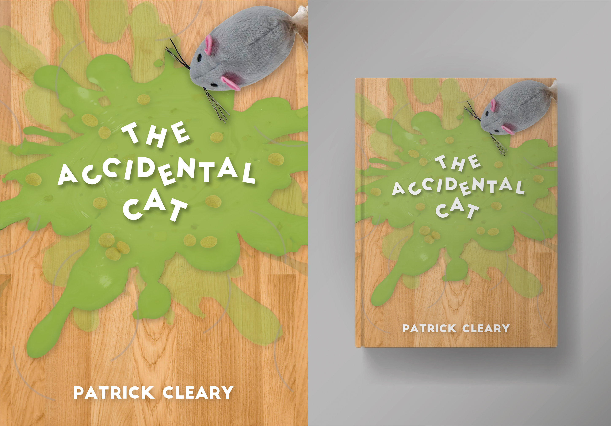

Yo what it do, I’m Carlos. This site is an amalgamation of some current projects that I have worked on. I am a graphic designer, still learning but have a good grasp on all those fancy adobe apps. Currently studying at Oregon State University but I reside in the Eugene area. I have been doing graphic design since high school, although it may not look like it but it's true! One of my current goals is to branch out and meet new people. I am really introverted so it's pretty hard to step out of my comfort zone but I want to grow and meet people who push me to be a better person and designer.
This is my project regarding the swiss art style. I was given the task of creating a neutral design that was informative yet not revealing of the information. For the event we were told to look around campus and find something to use for this project, I just took a photo of an advert I found in between the walk between classes so it was not anything special. I had six sketches of grid layouts and compositions and talked amongst my peers to help me decide on which one to go digital with. I ended up loving the colors and shapes, it feels very spacious and totally has a neutral look to it.
This project was the final for my Production One class. There was a brochure attached with the final but I really liked how my poster came out. This project required me to choose a national park and research it in order to create a brochure about the park. I randomly chose mine and had no reason for it as I have not visited any national park. I chose one of the attractions and played around with the image trace. I looked at some official works and designs and used a strong typeface that resembled what they used to do for their older advertisements. I mixed this old style with a fresh modern look to create a juxtaposition.
For the most recent project I worked with, I had to roll back the sleeves and make some code. I learned how to create a multipage website that was informative and interactive with the user. This challenge took lots of time and youtube videos to figure out but I managed to work it out. I made my website about postmodern design but specifically grunge. To be honest, I chose grunge because it reminded me of Spider-Punk from the Spider-Verse movies. This project definitely pushed me and made me figure out code and analyse any and all errors because the code can be fine but if you have a typo then that can cause an error.

This was the final project in my GD126 class. This class is required to get into the graphic design program. So there was a lot of stress when this design was made. We were told to make a book cover and I got a pretty bad grade on it, so on the final project we had a chance to revise one of our designs within the class. I took this opportunity to redo this book cover. I used illustraitor to help create the shapes of throw up. This was a hard challenge because I had to take a story about a cat that would throw up all the time into an interesting book cover.
This is a personal piece that I made during highschool. I had a lot of time so I took advantage of it and decided to put all my effort into making a cereal box. This is completely fan made for the movie Puss in Boots: The Last Wish. I absolutely loved this movie when it came out so I used it as the topic for my cereal box. I used a lot of photoshop when creating this so when I finished it I became very familiar with all the tools. After designing the entire layout, I printed the paper out and then used the same dimensions and made a 3D cereal box with cardboard. In hindsight I shoudlve added something inside the box to make it feel like there was cerea in there.